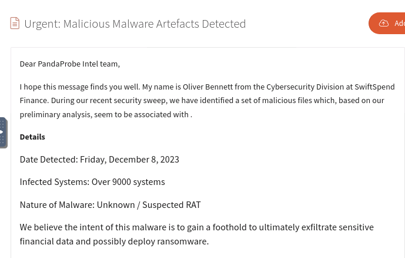
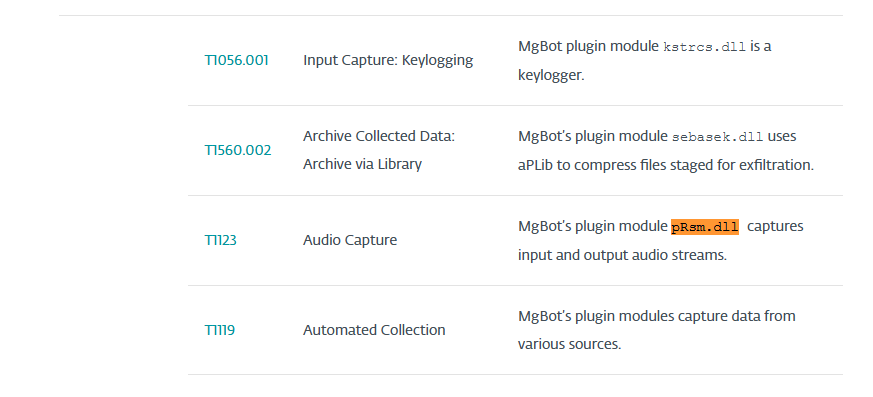

Date: April 4, 2025
After logging into the platform and reviewing the email, the individual who shared the malware samples was: Oliver Bennett.
Use the command sha1sum in terminal:
$ sha1sum pRsm.dllResearch points to MgBot as the malware framework that uses these DLLs as add-on modules.
Reading the same article as the one I provided about i found out the associated MITRE ATT&CK Technique is T1123.
The defanged URL using CyberChef:
hxxp[://]update[.]browser[.]qq[.]com/qmbs/QQ/QQUrlMgr_QQ88_4296[.]exeThe defanged C&C server IP:
122[.]10[.]90[.]12Using VirusTotal on the related IP, the Android spyware sample SHA1 is:
1c1fe906e822012f6235fcc53f601d006d15d7be